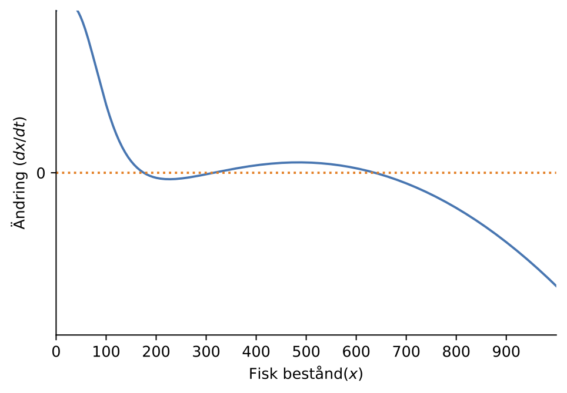

Uppgifter (på svenska)
Undersöker följande replicator ekvation
\[\begin{aligned} \dot{x}(t) = x(t) (1-x(t)) (1/4 - 1/2 x(t)) \end{aligned}\]Hitta alla jämviktspunkter och använder linjärisering för att bestäm stabilitet. Har modellen dynamik som mest likna prisoners dilemna, stag hunt eller hawk-dove?
SI modellen av en epidemi har följande tillståndsform
\[\frac{dS}{dt} = - \beta S I + \gamma I\]Antar att \(\beta=1/3\), \(\gamma=1/6\) och \(S+I=1\).
Visa att det finns en jämviktspunkt där \(S_*=I_* = 1/2\)
Bestäm stabiliteten av jämviktspunkten.
Om \(\beta=1/3\) för vilket värde av \(\gamma\) är jämviktspunkten där \(S_* = 1\) stabil?
Följande tillstånds model beskriver tillväxt av fisk bestånd i en sjö, där \(x(t)\) är tusentals fisk i sjön.
\[\begin{aligned} \frac{d}{dt}x(t) = r x(t)(1- x(t)) + c \end{aligned}\]där \(c>0\) är inflödet av nya fisk (från en närliggande sjö) och \(r>0\) är tillväxthastighet.
Hitta alla jämviktspunkter \(x_*\) till ekvationen och beräkna stabiliteten.
Hur många fisk finns i sjön när \(t \rightarrow \infty\) om modellen stämmer?
När det finns minst \(F = 100\) fisk i sjön utförs fisketillstånd så att turister får kommer dit och fiskar. Sjömyndigheten har kommit fram till att följande model gäller i detta fall.
\[\begin{aligned} \frac{dx}{dt} = f(x) = r x(1- x) + c - b \frac{x^3}{F^3 + x^3} \end{aligned}\]De skatar parameter \(r\), \(b\), \(c\) och \(F\) och skissa funktionen, \(f(x)\), nedan.
Hur många jämviktspunkter har \(f(x)\)? Hur många är stabila? Hur kan man tolka modellen när det gäller långsiktig fisk beståndet i sjön?
Obs: Använd grafen att lösa problemet! Du behöver inte lösa ekvationen.
{kind=link}